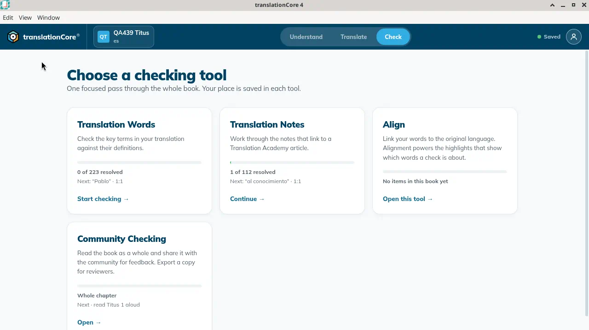
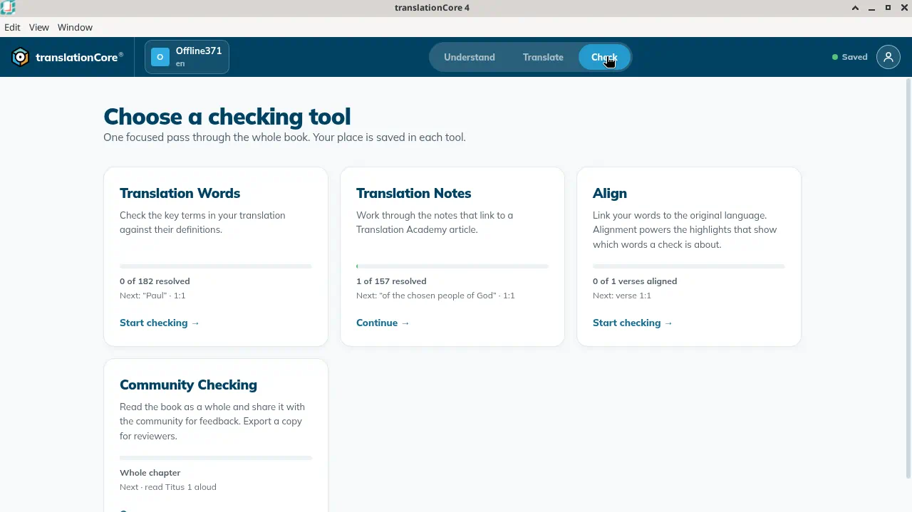
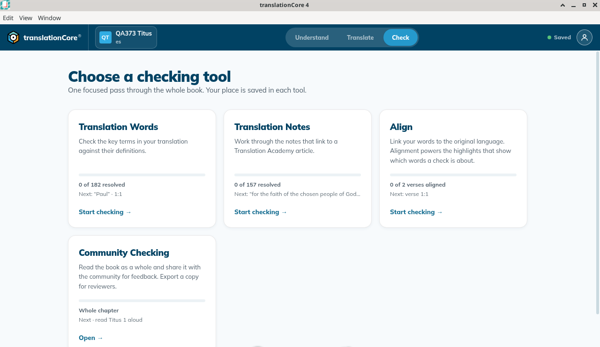
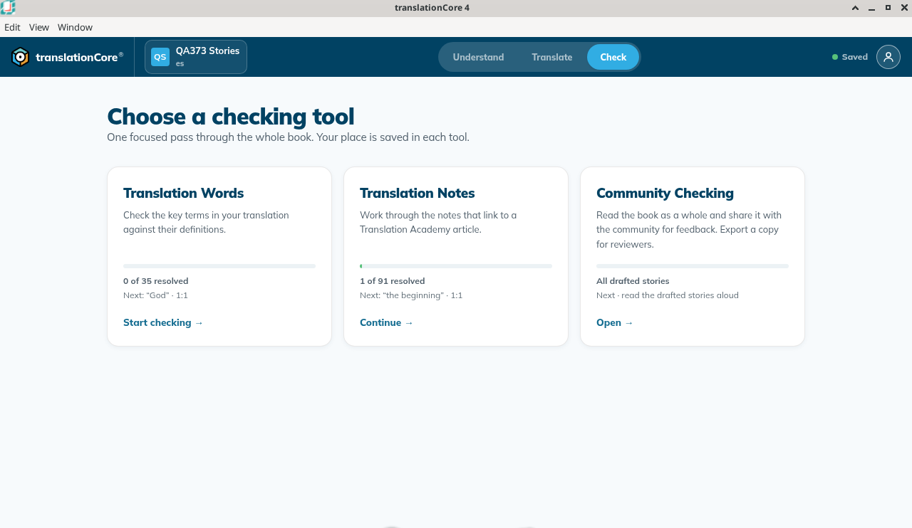

Choose a checking tool
The Check screen lists the checking tools for the open book and how far you have got in each.
Where in the app: Top bar › Check › Choose a checking tool
What it is
Check is where you review your draft systematically. The list of tools lets you pick one. Each tool is one focused pass through the whole book, and tC4 remembers your place in each.
Each card shows your progress: a bar, a count such as "2 of 157 resolved", and the next item to check. There is no "ready" label: a card that is ready to use simply shows its progress. A label appears only when the tool cannot open yet, for example Needs downloading.
When to use it
After you have drafted some or all of a book.
Step by step
- Open a book and click Check in the top bar. The first time, the list of tools opens. After that, Check takes you back to the tool you used last; click ← All checking tools at the top left to see the list.
- Look at the progress on each card.
- Click a card to open the tool. Its link says Start checking →, Continue → or Review →. Community Checking says "Open →".
- To come back to this list from inside a tool, click ← All checking tools.
What you should see
- The heading reads Choose a checking tool with the line "One focused pass through the whole book. Your place is saved in each tool."
- For a Bible book four cards appear, in this order: Translation Words, Translation Notes, Align and Community Checking. For a story there are three: Translation Words, Translation Notes and Community Checking (no Align).
- Each checking card shows a progress bar, a count such as "0 of 182 resolved" or "1 of 157 resolved", the next item, and a link such as Start checking → or Continue →. Community Checking says "Open →". With nothing drafted, Align says "No items in this book yet".
- A card shows a state label only when something is wrong: Needs downloading, Unavailable offline, No resources pinned or Not available for this book.
Screenshots

img/ck-tool-picker-1.png
img/ck-tool-picker-2.png
img/ck-tool-picker-3.png
img/ck-tool-picker-4.pngTips
- The card also names the next item, for example "Next: “grace” · 1:4". When everything is decided it says All resolved — review any item.
- On Offline371 the four cards are Translation Words (0 of 182 resolved, Next: "Paul" · 1:1, Start checking), Translation Notes (1 of 157 resolved, Next: "of the chosen people of God" · 1:1, Continue), Align (0 of 1 verses aligned, Next: verse 1:1, Start checking) and Community Checking (Whole chapter, Next · read Titus 1 aloud, Open →). "Whole chapter" is the reading scope, not an error. Align counts drafted verses only. The Notes card already showed 1 of 157; nothing was marked on this pass. No tool was opened.
- "A tool that is not ready never blocks the rest of your work." You can keep drafting while a resource downloads.
- If a card says Needs downloading or Unavailable offline, click Fix this… (see Fix a missing resource).
- You can move between a Bible project and a stories project freely. Each project's tools use that project's own notes and words: Titus uses the Bible notes (en_tn) and words (en_tw), and a story uses the story notes (en_obs-tn) and the story word list (en_obs-twl). Earlier builds could wrongly say "This book is not in the pinned resource" after a switch; that was fixed in Increment 8 (issue #434).
- The Align card counts only drafted verses or spans. On QA373 Titus, with 1:1 and the span 2-3 drafted, it said "0 of 2 verses aligned". With nothing drafted it says No items in this book yet.
- Known issue: The count and the "Next:" line on a card can lag behind what you did in the tool. For example, the card can say "1 of 157" when the tool says "2 of 157 resolved", or name an item you already marked valid. The count inside the tool is the right one.
Known limits
- Checks exist only for verses you have drafted. An undrafted verse says "This verse is not drafted yet. Draft it first, then return to check."
Related topics
For testers and developers
Code: src/views/Check.jsx (PickerGrid, ToolCard), src/data/resolve.ts (preflight)
Journeys: J9, J10